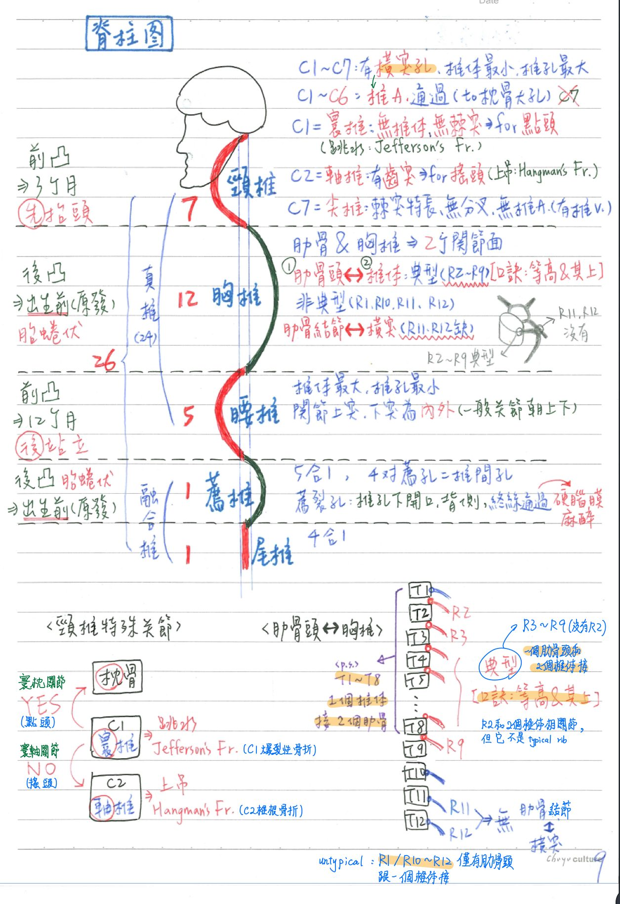
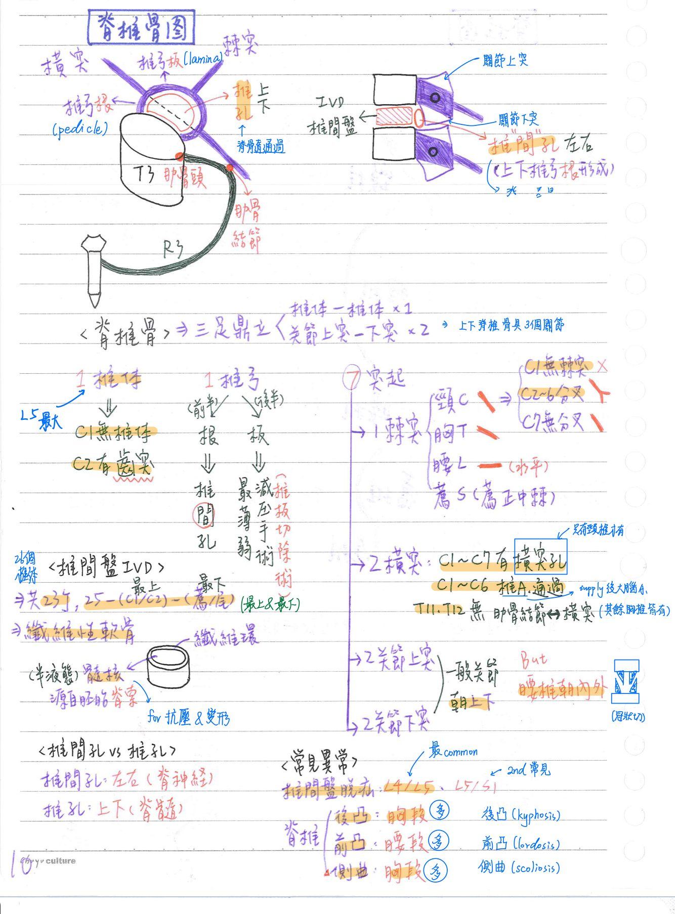
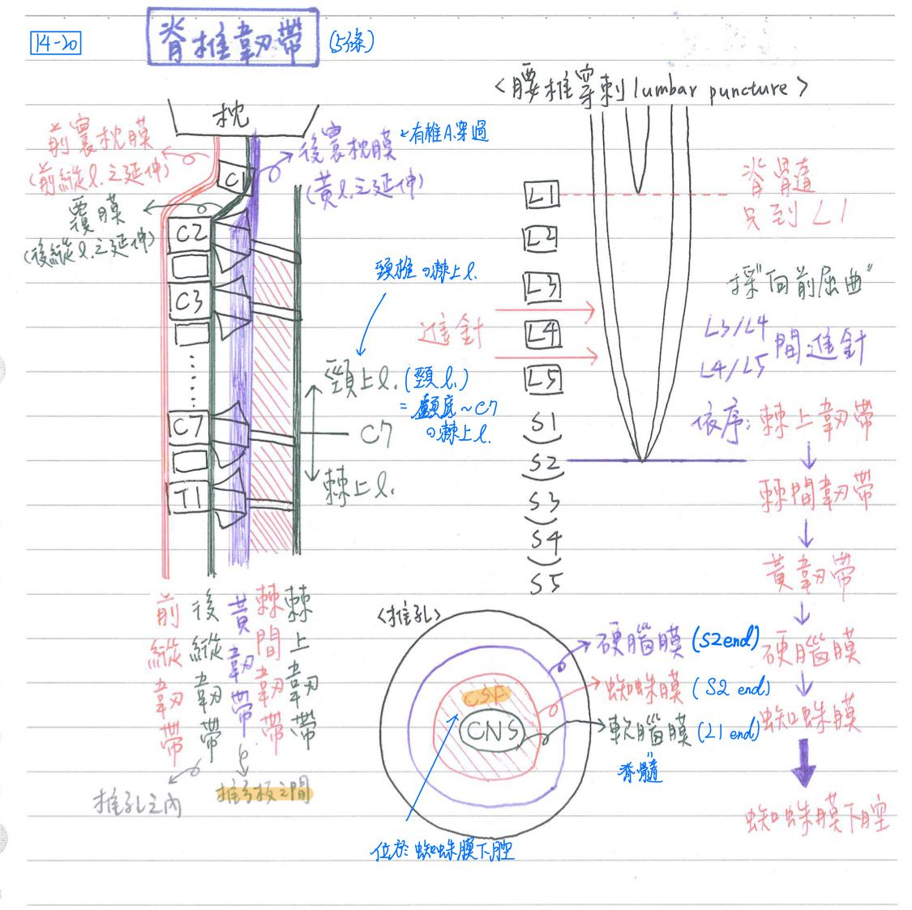
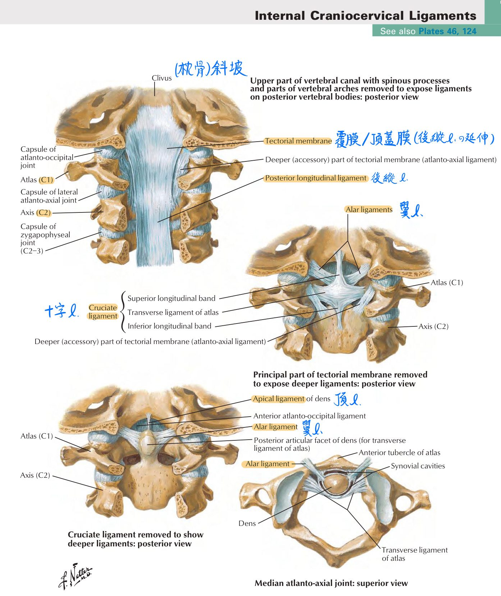
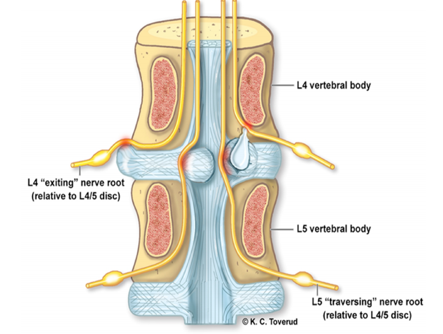

🦴 骨骼系統(脊椎骨)
脊柱
脊柱(vertebral column)：26塊脊椎骨—>屈曲、伸展、側曲、旋轉
- 頸椎=7
- 胸椎=12
- 腰椎=5
- 薦椎=1(5塊融合成1塊)
- 尾椎=1(4合1)
- 頸、胸、腰椎：真椎(典型脊椎骨，沒有fusion)
- 薦、尾椎：融合椎
彎曲(curvature)
- ★原發性(初級)彎曲：前凹—>助胎兒蜷伏於子宮
- 胸彎曲
- 薦彎曲
- 續發性(次級)彎曲：後凹
- 頸彎曲：助嬰兒抬頭(3個月)
- ★腰彎曲：助嬰兒直立(12個月)：嬰兒站立行走後最明顯的彎曲

脊椎骨
椎體(body)
- 功用：承受重量的主力
- 特點：
- 腰椎(尤其L5)椎體最大
- C1：無椎體—>C1椎弓前中點特化為前結節(anterior tubercle)
- C2：具齒突(odontoid process=dens)，源自C1的椎體
- ★肋關節面：胸椎和肋骨頭相關節
- 每一個肋骨和胸椎具2個關節：
- 肋骨頭-錐體[(R2~R9)x2；(R1,R10~12)x1]
- T1~T8椎體：和2個肋骨頭相關節
- R2~R9會和2個胸椎相關節 (hint：等高&其上)
※典型肋骨：R3-R9；不典型肋骨：R1, R2, R10-12
※R2和兩個胸椎相關節，但不是典型肋骨 (趙神講錯)
- ★肋骨結節-橫突：R11~12沒有(因為是浮肋)
- T11,T12 沒有
- 肋骨頭-錐體[(R2~R9)x2；(R1,R10~12)x1]
- 上下脊椎骨具3個關節：
- 椎體-椎體(椎間盤) x1
- 關節上突-關節下突 x2(成對)
椎弓(arch)
- 前半=椎弓根/★椎根(pedicle)
- 後半=椎弓板/椎板(lamina)：最薄弱處；椎板切除術(減壓手術)切除部位
- 椎板切除術：留出更多的空間，減少椎間盤對脊髓的壓力
- 椎間孔(intervertebral foramen)：上、下兩脊椎骨之椎弓根間的空間，脊神經通過
- 椎孔(vertebral foramen)：椎體+椎弓共同圍成
(1) 脊隨所在
(2) 頸椎椎孔較大(因為椎體較小)
(3) 腰椎椎孔較小(因為椎體較大)
- 椎管(vertebral canal)：由脊椎骨所有的椎孔共同形成
突起(process)：7個。橫突x2；棘突x1；關節上突x2；關節下突x2
- 橫突(transverse process)
- 頸椎：具橫突孔(椎A. 通過C1~C6)[椎A.並未通過C7的橫突孔]
- 頸動脈結節(carotid tubercle)：C6橫突的前結節，可壓迫總頸A.於其上
- 胸椎：具有肋關節面(和肋骨結節相關節)，除了T11,T12
- 薦椎：融合成薦外側棘，S1的橫突特化為翼(ala)
- 棘突(spinous process)：單一
- 棘突方向(重點)：頸椎朝後下；胸椎朝後偏下；腰椎水平向後(越來越水平)
- C1無棘突—>椎弓後中點特化為：後結節(posterior tubercle)
- ★C2-C6棘突有分叉(bifid)，C7不具分岔
- C7的很突/長，稱為尖錐/隆椎(背部由上往下第一個摸的到的明顯凸起)
- 薦椎棘突—>融合成薦正中棘(review：薦椎是融合椎)
- 關節上突(superior articular process)：成對 [hint：(一般)上下(腰椎)內外(上對內；下對外)]
- 一般朝上，但腰椎朝內
- 與上一脊椎的下突相關節(下突疊在上突上)
- 關節下突(inferior articular process)：成對
- 一般朝下，但腰椎朝外
- S5的關節下突—>薦角(sacral cornu)
椎間盤
- 共23個：25(26塊脊椎骨)減去頭尾(C1/C2+薦椎/尾椎)
- 屬纖維性軟骨；形成微動關節(上下椎體間)
- 外圍：纖維環(annulus fibrosus)，由纖維性軟骨構成，最外圍的膠原纖維附著於前縱&後縱韌帶
- 中央：★[108-1]髓核(nucleus pulposus)，from胚胎期之脊索(notochord)，呈半液態
⇒利於抗壓與變形(避震器的概念)
特殊脊椎(整理)
- ★C1=寰椎(atlas)：無椎體、無棘突；具椎動脈溝—>形成★寰枕關節(點頭)
※jefferson's fragment：頭頂直接垂直撞地(EX：跳水、墜樓)—>C1爆裂性骨折- ★[109-2]翼韌帶(alar ligament)：
- 連接軸椎齒突與枕骨大孔（foramen magnum）的左右兩內側面
→在頭部旋轉時穩固頸部
- 連接軸椎齒突與枕骨大孔（foramen magnum）的左右兩內側面
- 十字韌帶(cruciate l.)：連接axis的齒突-atlas-枕骨
- ★[109-2]翼韌帶(alar ligament)：
- C2=軸椎/樞椎(axis)：椎體具★齒突(源自C1椎體)→形成★寰軸(C1/C2)關節(搖頭)
- ★[109-2]和C1前結節的後表面相關節
※Hangman's fragment：因頸椎過度伸展(EX：上吊)→C2椎根骨折
- ★[109-2]和C1前結節的後表面相關節
- C7=尖/隆椎：因為棘突特長
- 頸椎特徵：具橫突孔(C1-C6的有椎A.通過，C7的沒有)；C2-C6棘突具分岔；椎體最小、椎孔最大
- 胸椎特徵多具2個肋關節面(椎體/肋骨頭+橫突/肋骨結節)
- 腰椎特徵：椎體最大、椎孔最小
- 薦椎：(=薦骨=觝骨)
- 4對★薦孔(sacral foramen)=椎間孔：薦N通過；可由體表觸知
- 薦管(sacral canal)：薦孔共同形成
- 薦裂孔(sacral hiatus)：薦管下端開口，終絲通過
→下端硬腦膜外麻醉/尾椎硬膜外神經阻斷術(lower epidural anesthesia)操作處
- 薦岬(promontory)：椎體前上方，和恥骨聯合連線構成骨盆緣，其中間距為共軛直徑(conjugate diameter)—>真骨盆入口的前後徑
- 薦正中棘：薦椎棘突的融合；薦外側棘：薦椎橫突的融合
- 薦角(sacral cornu)：S5的關節下突
- ★薦三角(sacral triangle)：底是由髂骨後上棘連線行成；為薦椎在體表的投射位置(S2~Co)


脊椎-韌帶：5條(由背側往腹側)
- 棘上韌帶(supraspinous l.)：★C7-薦椎之棘突上
※頸/項韌帶(nuchae l.)：顱底-C7的棘突上(=頸椎上的棘上韌帶)
- 棘間韌帶(interspinous l.)：上下棘突之間
- 黃韌帶(flavum l.)：上下椎弓板之間
※後寰枕膜(posterior atlanto-occipital membrane)：為黃韌帶的延伸，★有椎A. 穿過
- ★後縱韌帶(posterior longitudinal l.)：椎體後緣，在椎管(vertebral canal)內
※★覆膜/頂蓋膜(tectorial membrane)：為後縱韌帶之延伸
- 前縱韌帶(anterior longitudinal l.)：椎體前緣
※前寰枕膜(anterior atlanto-occipital membrane)：為前縱韌帶的延伸
- 腰椎穿刺(lumbar puncture)：抽腦脊髓液(CSF)或注射麻醉劑
- 進針位置：★L3/L4 或L4/L5
- 依序通過：棘上韌帶—>棘間韌帶—>黃韌帶—>硬腦膜—>蜘蛛膜
—>蜘蛛膜下腔(CSF所在地)
- 鞭繩損傷(whiplash injury)：
- 頸部過度伸展(後方撞擊rear-end)—>前方韌帶受損
- 頸部過度屈曲(前方撞擊head-on)—>後方韌帶受損

常見之脊椎異常
- 椎間盤脫疝/脫位(HIVD)：L4/L5最常見；L5/S1第二常見
- 椎間盤中間突出→★壓迫與下方脊椎同名的脊神經
(EX：L4/L5椎間盤中間突出→壓迫到L5脊神經)
- 椎間盤外側突出→壓迫與上方脊椎同名的脊神經
(EX：L4/L5椎間盤外側突出→壓迫到L4脊神經)
- 椎間盤中間突出→★壓迫與下方脊椎同名的脊神經
- 脊椎後凸(kyphosis)：胸段多
- 脊椎前凸(lordosis)：腰段多
- 脊椎側曲(scoliosis)：胸段多

📖 書本補充：與筆記不同或筆記沒寫到的地方
⚠️
以下為對照書本後整理，筆記原文未更動。這一頁筆記比書詳細很多，書上多出來的主要是胚胎來源與幾個韌帶的位置。
結構及發育（p.118）
- 彎曲的寫法：書上用「前凸／前凹」——頸、腰＝次級、前凸；胸、薦＝初級、前凹（筆記寫次級「後凹」，意思相同，只是描述的方向不同）。出現時間：頸彎曲＝頭直立時；腰彎曲＝開始走路時；初級彎曲＝胎兒時期。
- 胚胎來源（筆記只寫髓核）：
- 生骨節（sclerotome） → 椎弓、椎體（形成椎骨）以及纖維環（形成椎間盤的外圍）。
- 脊索（notochord） → 髓核。
- 書的提示：注意彎曲出現的時間與脊索的胚胎來源；所謂「椎間盤是纖維軟骨」指的是纖維環。
- 101-1-3 解析：迴轉＝屈曲＋伸展＋內收＋外展，脊柱無法做內收、外展，所以不能迴轉。
椎骨的結構（p.120）
- 椎弓＝椎足（pedicle）＋椎板（lamina）；椎孔介於椎體與椎弓之間；突起＝棘突、橫突及上下關節突。
- 頸椎的橫突上有橫突孔，供椎動脈通過；只有胸椎的橫突上有肋關節面（109-2-13 解析）。
- 寰椎（C1）：無椎體和棘突；與枕骨髁形成的關節做屈曲和伸展（"Yes" 點頭）。
- 樞椎（C2）：齒狀突；與寰椎經由橫韌帶（transverse ligament）形成樞軸關節（pivot joint），做旋轉（"No" 搖頭）。
- 109-2-13 解析：連接樞椎齒突和寰椎的是橫韌帶，不是翼韌帶（筆記寫翼韌帶連到枕骨大孔內側面，與此一致）。
- 隆椎（C7）：長棘突，其餘同一般椎骨。
- 書的提示：胚胎時 C1 的椎體往下與 C2 椎體癒合成齒狀突；所有椎孔合起來形成椎管。
韌帶及孔洞（p.121）
- 項韌帶：C7 到枕外隆凸（筆記寫「顱底–C7」）。
- 後縱韌帶：在椎體後面、椎管內；107-1-31 解析強調前縱韌帶在椎骨前方、不在椎管腔內。
- 孔洞與通過構造：椎孔 → 脊髓；椎間孔（上下椎體之間的外側）→ 脊神經；橫突孔（頸椎）→ 椎動脈。
📝 書中歷屆考題（點選答案作答）
101-1-3p.119
下列何者不是脊柱的運動方式？
💡 迴轉包括屈曲、伸展、內收及外展；脊柱無法做後兩個動作。
108-1-36p.119
下列何者衍生自脊索 (notochord)？
110-1-35p.119
下列何者源自體節之生骨節 (sclerotome) 的間質細胞？
💡 顱骨來自神經嵴及咽弓等等。
101-1-28p.119
嬰兒開始站立行走後，下列何者最為明顯？
103-1-26p.119
下列有關人體脊柱 (vertebral column) 的彎曲，何者正確？
107-1-31p.122
下列何者位於脊椎管腔 (vertebral canal) 內，且向上連至顱底的頂蓋膜 (tectorial membrane)？
💡 髓核與環狀纖維組成椎間盤，不會連到顱底；前縱韌帶在椎骨前方，不在椎管內。
109-2-13p.122
有關頸椎關節的敘述，下列何者正確？
💡 寰枕關節是前後點頭；連接齒突與寰椎的是橫韌帶；只有胸椎橫突有肋關節面。
111-2-29p.122
下列甲、乙、丙三個椎骨，在脊柱由頭端往尾端的排列順序為何？（原題附三張椎骨圖：甲＝椎體旁及橫突上有肋骨關節面；乙＝椎體比甲、丙大許多；丙＝有橫突孔）
💡 甲為胸椎、乙為腰椎、丙為頸椎，所以由頭往尾是丙甲乙。（圖的描述依書上解析整理。）